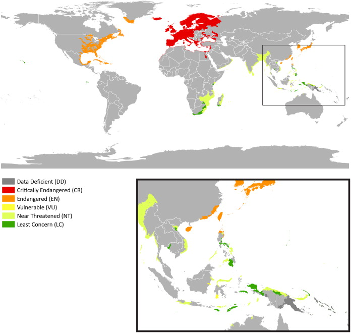
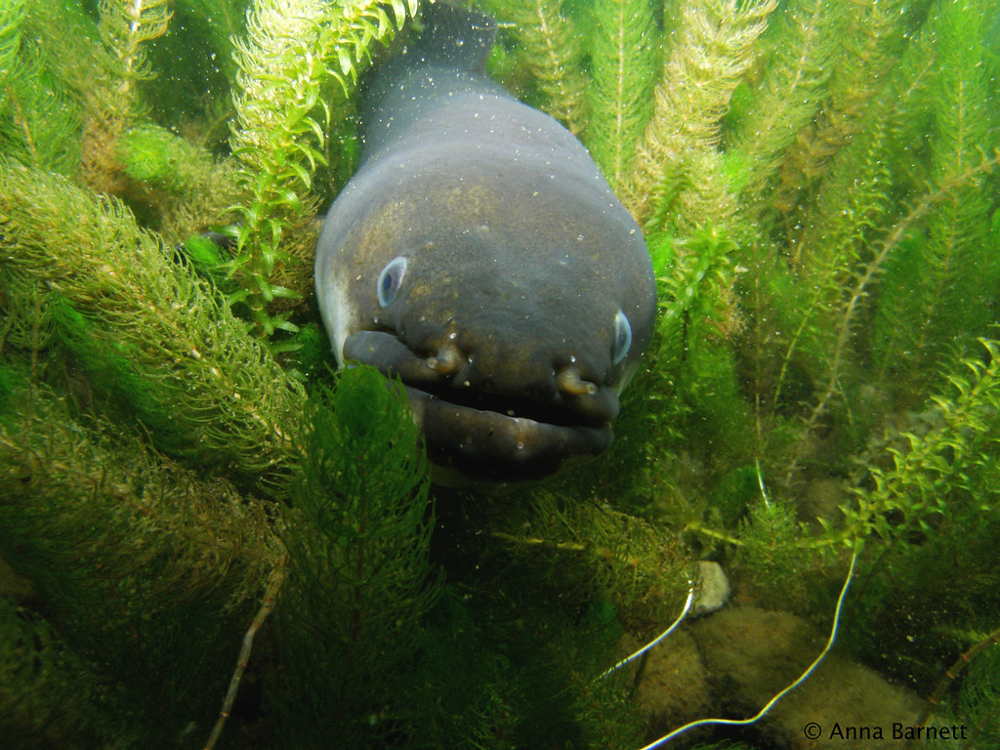
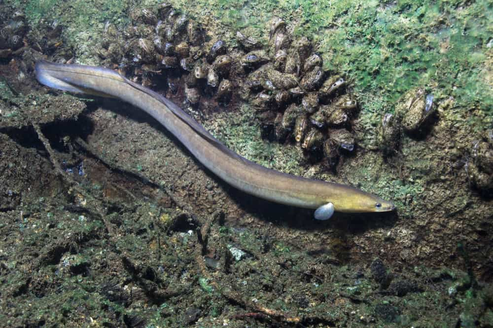
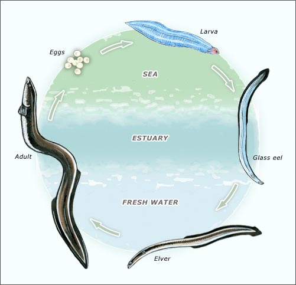

Freshwater eels are elongated fish with a snake-like appearance that live in freshwater rivers and streams. They are found all over the world and are known for their unusual lifecycle, which includes a long-distance migration to the ocean to spawn.
 Freshwater eels feed on a variety of prey, including insects, crustaceans, and small fish. They are opportunistic predators, using their sense of smell and electrical sensitivity to locate food.
In addition to their unique lifecycle, freshwater eels are also popular in the aquarium trade. They can be kept in home aquariums, but require specific conditions to thrive.

The lifecycle of freshwater eels is complex and not fully understood. Eels are born as leaf-shaped larvae that drift with ocean currents before reaching freshwater rivers and streams.
